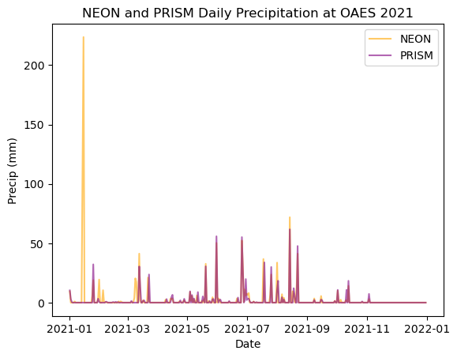
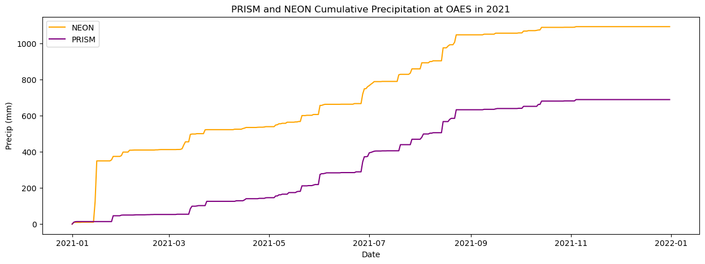

Compare NEON and PRISM data:#
Use this notebook to generate timeseries & cumulative precipitation plots#
# Import Libraries
%matplotlib inline
from datetime import datetime
from glob import glob
import matplotlib
import matplotlib.pyplot as plt
import numpy as np
import pandas as pd
import xarray as xr
Choose site and retrieve PRISM data#
# Choose Year and Site (please use strings, e.g. put quotes around the year, as well)
year = '2021'
site = 'OAES'
# Get prism data for particular year and site
pd.set_option('mode.chained_assignment', None)
prism_files_per_year = {'2018': 'PRISM_ppt_tmean_stable_4km_20180101_20181231.csv',
'2019': 'PRISM_ppt_tmean_stable_4km_20190101_20191231.csv',
'2020': 'PRISM_ppt_tmean_stable_4km_20200101_20201231.csv',
'2021': 'PRISM_ppt_tmean_stable_4km_20210101_20211231.csv',
'2022': 'PRISM_ppt_tmean_stable_4km_20220101_20220531.csv'}
# perform conversions and gather relevant data
prism_df = pd.read_csv(prism_files_per_year[year], sep=';')
# find relevant rows based on whether or not site is in cell
prism_data = prism_df[prism_df['PRISM Time Series Data'].str.contains(site)]
new_df = prism_data["PRISM Time Series Data"].str.split(",", expand = True)
prism_data["Precip"] = new_df[5] # rain is 6th value in csv file, indexing starts at 0, so index #6
prism_data["Time"] = new_df[4] # date is 5th value in csv file, indexing starts at 0, so index #4
# Perform unit conversions
prism_data['Precip'] = prism_data['Precip'].astype(float)
# read in NEON data
half_hourly_files = '/glade/work/tking/ctsm_tking/tools/site_and_regional/{}.transient/run/inputdata/atm/cdeps/v2/{}/{}_atm_{}-*.nc'.format(site,site,site,year)
half_hourly_neon_dataset = xr.open_mfdataset(half_hourly_files, parallel=True)
# resample NEON data to be daily
daily_neon_prect_dataset = half_hourly_neon_dataset['PRECTmms'].resample(time='1D').mean()
# get correct units (mm/s * (3600s/hr) * (24hr/day) = mm/day)
daily_neon_prect = daily_neon_prect_dataset[:,0,0] * 3600 * 24
prism_time_vals = prism_data['Time']
prism_precip_vals = prism_data['Precip']
prism_times=[]
for val in prism_time_vals:
prism_times.append(datetime.strptime(val,'%Y-%m-%d'))
# You can double check which values are being pulled from the csv file with this cell
prism_data
| PRISM Time Series Data | Precip | Time | |
|---|---|---|---|
| 9865 | OAES,-99.0604,35.4106,512,2021-01-01,10.29,-1.0 | 10.29 | 2021-01-01 |
| 9866 | OAES,-99.0604,35.4106,512,2021-01-02,3.03,2.5 | 3.03 | 2021-01-02 |
| 9867 | OAES,-99.0604,35.4106,512,2021-01-03,0.51,3.8 | 0.51 | 2021-01-03 |
| 9868 | OAES,-99.0604,35.4106,512,2021-01-04,0.00,5.3 | 0.00 | 2021-01-04 |
| 9869 | OAES,-99.0604,35.4106,512,2021-01-05,0.00,7.6 | 0.00 | 2021-01-05 |
| ... | ... | ... | ... |
| 10225 | OAES,-99.0604,35.4106,512,2021-12-27,0.00,16.4 | 0.00 | 2021-12-27 |
| 10226 | OAES,-99.0604,35.4106,512,2021-12-28,0.00,9.5 | 0.00 | 2021-12-28 |
| 10227 | OAES,-99.0604,35.4106,512,2021-12-29,0.00,10.2 | 0.00 | 2021-12-29 |
| 10228 | OAES,-99.0604,35.4106,512,2021-12-30,0.00,8.1 | 0.00 | 2021-12-30 |
| 10229 | OAES,-99.0604,35.4106,512,2021-12-31,0.00,7.6 | 0.00 | 2021-12-31 |
365 rows × 3 columns
Calendar year daily precipitation plot#
# Plot datasets
plt.plot(daily_neon_prect['time'], daily_neon_prect, label="NEON", color="orange", alpha=0.6)
plt.plot(prism_times,prism_precip_vals, label='PRISM', color='purple', alpha=0.6)
plt.rcParams["figure.figsize"] = (15,5)
plt.xlabel('Date')
plt.ylabel('Precip (mm)')
plt.title("NEON and PRISM Daily Precipitation at {} {}".format(site, year))
plt.legend()
plt.show()

Calendar year cumulative precipitation plot#
# sum PRISM precip values over the course of the year
cumulative_prism_precip_vals=[]
for index in range(0, len(prism_data)):
cumulative_val = prism_precip_vals.iloc[:index].sum()
cumulative_prism_precip_vals.append(cumulative_val)
# NEON data is in different format
daily_neon_prect_array = daily_neon_prect.compute()
cumulative_daily_neon_prect = []
for index in range(0, len(prism_data)):
cumulative_val = np.sum(daily_neon_prect_array[:index])
cumulative_daily_neon_prect.append(cumulative_val)
# Plot cumulative precipitation
# Note that for 2022, x/y values besides cumulative_daily_neon_prect must be truncated
plt.plot(daily_neon_prect['time'], cumulative_daily_neon_prect, label="NEON", color="orange", alpha=1)
plt.plot(prism_times, cumulative_prism_precip_vals, label='PRISM', color='purple', alpha=1)
plt.rcParams["figure.figsize"] = (15,5)
plt.xlabel('Date')
plt.ylabel('Precip (mm)')
plt.title("PRISM and NEON Cumulative Precipitation at {} in {}".format(site, year))
plt.legend()
plt.show()
# plt.savefig("Precip_{}_{}".format(site, year))
